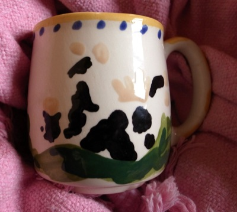
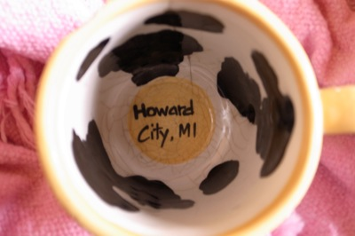

Cow Town Cafe, Howard City, MI
Fifteen years ago my parents opened a cafe in Howard City, Michigan, the town where I grew up and where most of my family lives. My dad and brothers gutted a nineteenth century building on Edgerton Street. My mom remodeled everything in respect of the building’s historical context. A drop ceiling and florescent lights were tossed to reveal the original high ceiling that we embellished with hanging glass lights; drywall was removed to reveal beautiful brick; stained carpet was ripped up to reveal creamy wood floor. We put in a counter, an espresso machine, a couch and mismatched tables and chairs.
Across the road my dad went on to gut two more buildings, one was where Ed had his restaurant: Ed’s Restaurant. Apparently the grease clung to the walls and floor and french fries were found petrified. These buildings remained empty until they found a buyer years later. We had enough work on our hands at our new cafe.

Rare Cow Town Cafe mug made by my mom.
The heavy metal sign in the form of an upside down cow was hung: Cow Town Cafe. The name and the logo was an ironic commentary on the character of Howard City as much as it was a challenge. My parents not only dared to establish an aesthetic, but also to start what was just beginning to take hold in cities of the midwest, the cafe, among the usual businesses of small towns: a pizza joint/video rental, another pizza joint, a post office, a dentist, a library, a bowling alley, Ed’s and an insurance company. I don’t know how they convinced themselves that this was a good idea, but they did, and I still commend them for it.
My grandma made soup daily. We served sandwiches on fresh baked bread. And coffee drinks, mochas, cappuccini and lattes full of sugary flavoring. Its almost hard to remember that these kinds of places were rare. On the opening day we were busy and as I learned to serve coffee, I learned the absolute pleasure of drinking lots of shots of espresso. After that we were never really busy, but we had regulars and others who came out of curiosity. We were written about in the Grand Rapids Press and I was interviewed for the evening news.
I think it was at the end of summer—we had opened in June—that we received the first threatening letter under our door. In certain language the letter said that we were not welcome to serve our “fancy” coffee. A few days later we got another. We wrote an opinion piece in the River Valley Shopper, someone on the opposition submitted their words. Someone on our side wrote back. The battle escalated and eventually fizzled out when they realized the Cow Town Cafe wasn’t going anywhere. Somewhere, I hope, is a scrapbook where each printed piece and sneaky letter was lovingly pasted into.
I love this story as much as I loved finding the notes under the door.
The building is still on Edgerton, but no longer called Cow Town Cafe. Last winter I ate a BLT in an ambience that hasn’t changed since 1996. This past summer it was closed. Across the road is a very fine furnishings store run by someone I played the clarinet with in High School. The building has stuck to our original vision. On the corner with Old 131 is a tasty and good-looking restaurant that’s been there for years now. And while I was there this last summer, the whole of Edgerton was getting updated to be more pretty and people friendly. Those letter writers must be seething.

Inside of rare Cow Town Cafe mug by Margaret Farratell (mom). See her Etsy store for current projects and christmas present ideas.
· · · · · · · · · · · · · · · · · · · ·